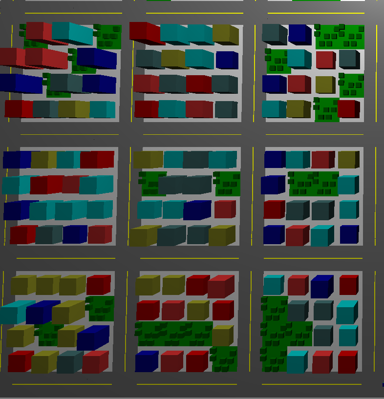
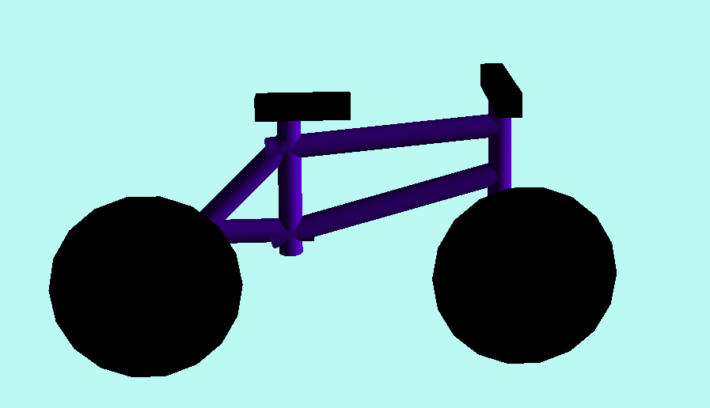

A city navigable by bicycle
This served as my final project for an undergraduate course in 3D computer graphics. It is written in C++ with OpenGL. In the course, I studied ray tracing, the 3D rendering pipeline, geometric transformations, lighting & shading, and graphics data structures.
The city is randomly generated and includes architecture, parks, and traffic. Downtown looms in the distance. Explore the city and watch out for car doors!
 